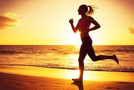

Tập thể dục thể thao là một phần quan trọng của lối sống lành mạnh. Tập thể dục thể thao giúp hạn chế các vấn đề sức khỏe, giúp cơ thể khỏe mạnh, cung cấp năng lượng, giúp giảm căng thẳng. Bên cạnh đó, còn có thể giúp bạn duy trì một trọng lượng cơ thể hợp lý và kiểm soát sự thèm ăn của bạn.


- Thể dục thể thao kiểm soát cân nặng.
- Thể dục thể thao phòng bệnh ngừa tật.
- Thể dục thể thao nâng cao tâm trạng.
- Thể dục thể thao tăng cường năng lượng.
- Thể dục thể thao cho giấc ngủ ngon.
Tập thể dục có thể ngăn tích tụ mỡ thừa và duy trì giảm cân. Khi hoạt động thể chất, đốt cháy calo, hoạt động càng mạnh, càng nhiều calo bị đốt cháy. Tập thể dục với lượng hoạt động bất kỳ tốt hơn là không có gì cả.

Tập thể dục thường xuyên giúp phòng ngừa hoặc kiểm soát rất nhiều vấn đề sức khỏe, bao gồm: đột quỵ, hội chứng chuyển hóa, cao huyết áp, bệnh lý xơ vữa mạch máu toàn thân, đái tháo đường, trầm cảm, rối loạn lo âu, nhiều loại ung thư, viêm khớp, dự phòng ngã.

Hoạt động thể chất kích thích các chất khác nhau trong não có thể khiến bạn cảm thấy hạnh phúc, thư giãn và ít lo lắng hơn. Bạn cũng có thể thấy bản thân và ngoại hình ổn hơn khi bạn tập thể dục thường xuyên. Có thể thúc đẩy sự tự tin của bạn và nâng cao lòng tự trọng của bạn.

Hoạt động thể chất thường xuyên có thể cải thiện sức mạnh cơ bắp của bạn và tăng sức bền của bạn. Tập thể dục tăng vận chuyển oxy và chất dinh dưỡng đến các mô của bạn và giúp hệ thống tim mạch của bạn hoạt động hiệu quả hơn. Và khi tình trạng tim và phổi của bạn được cải thiện, bạn có nhiều năng lượng hơn để giải quyết công việc hàng ngày.

Hoạt động thể chất thường xuyên giúp bạn có giấc ngủ nhanh hơn, ngon giấc hơn và sâu hơn. Chỉ không nên tập thể dục quá gần với giờ lên giường, nếu không bạn sẽ có quá nhiều năng lượng và trằn trọc khó ngủ.

Bạn cần ăn uống đúng cách để có năng lượng thực hiện các bài tập gắng sức. Kết hợp thêm các hình thức tập luyện khác nhau để đạt được kết quả tốt hơn như tập sức mạnh, tập thể hình... Bổ sung đủ nước cho cơ thể trong khi tập thể dục. Đặc biệt là các thức uống bù khoáng như Revive hoặc Aquarius,...